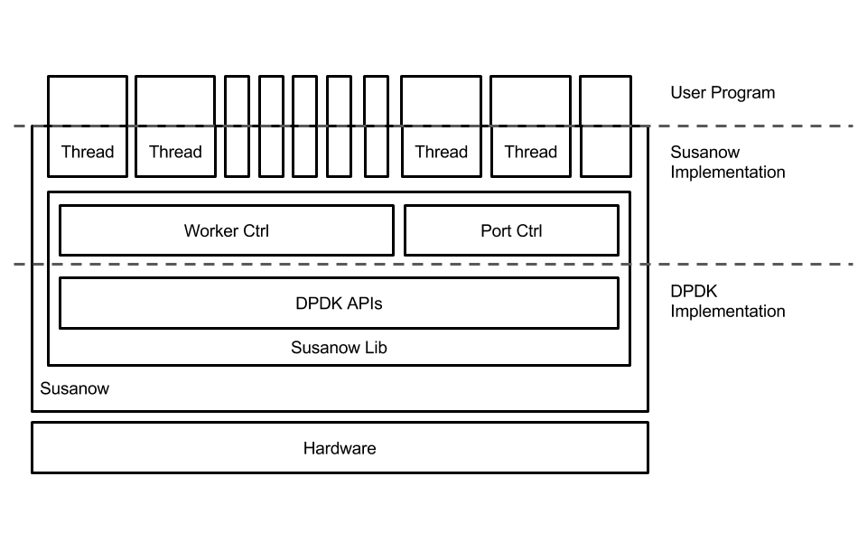
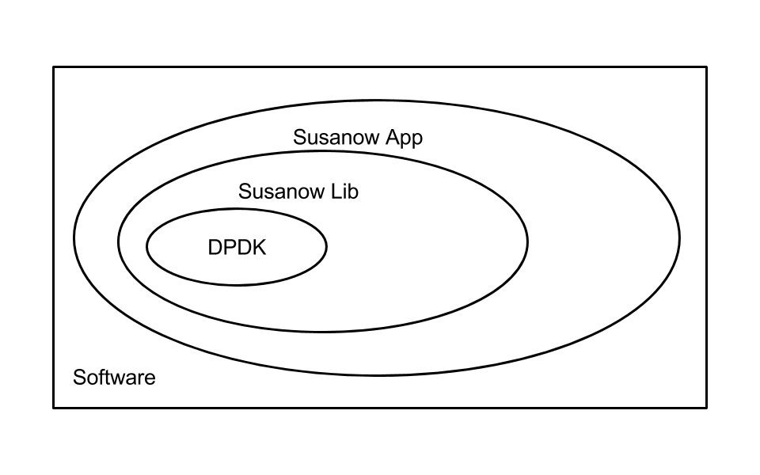
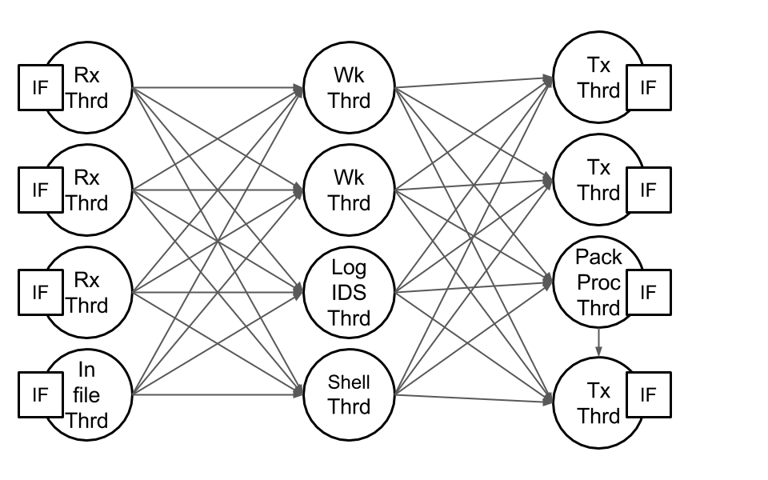

Implementation¶
Rules¶
Susanow is designed to following as below-rules
- Auto Optimization CPU Pinning
- do not use new operator
- Use SmartPtr to implement Polimorfizm
- Implement like a Library-OS
- Hate implicit prototypes
- Move semantics is better than reference and pointer
- Avalable to change Design Structure
- Using full-power of C++11
- Avalable to Re-Configuration while runnning
- All of needed Modules to implement Router,Switch.. are included
- Susanow calc Benchmark themselves
- Use iterator to loop syntax fastly
- [] doesn’t throw exception, .at() throw one
To write efficient code easily, Susanow is conposed as following.
  libsusanow wraps dpdk APIs to add interfaces as following
- throw exception
- constructor/destructor
- hide some interface that independent parameters and usually set as default value
Susanow is one of simple example using libsusanow. It using simple template susanow interface, ex Port_interface class, Ring_interface class Txq_interace class and Rxq_interface class. All of each interface class has simple virtual function to process their purposes. So basic Susanow can only simple processes. If user want Susanow to work more complex process, they can implement new interface class that inherit exist interface class. Detiled information as functiones and classes sepecification includes API documentation from Doxygen. We develop api documentation and Susanow platform at the same time. APIs documentation will help you.
Goal¶
- Efficientry Code to implement Router, Switch and more
- Easy to scale increase number of cores
- Running on Linux/x64
- It can try to new algorithms
- Next generation HPN platform
Memos¶
- Many type of Graphs representing thread patters
- Susanow includes simple thread implementation user can extend these
- Simple Software Conponents
Contribution¶
If you want to more detiled one, please see the issues and milestone on Github https://github.com/susanow/susanow
If you have some ideas or opinions to enhance our system, please access us on twitter, github, facebook or E-mail. You can access us from the following information.
- twitter @slankdev
- github slankdev
- facebokk hirokishirokura
- email slank.dev@gmail.com
if you are little compassionate, please tell us that you saw our GithubPages. because there are many emails (most of spam) coming mu emailbox.